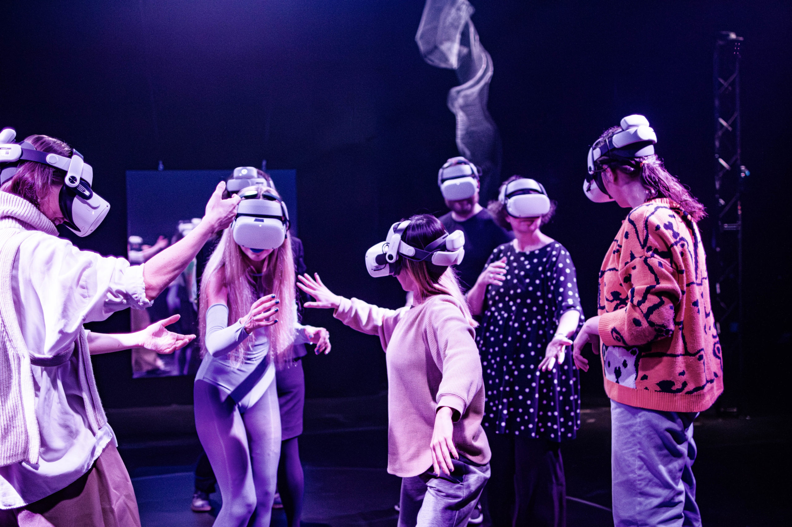
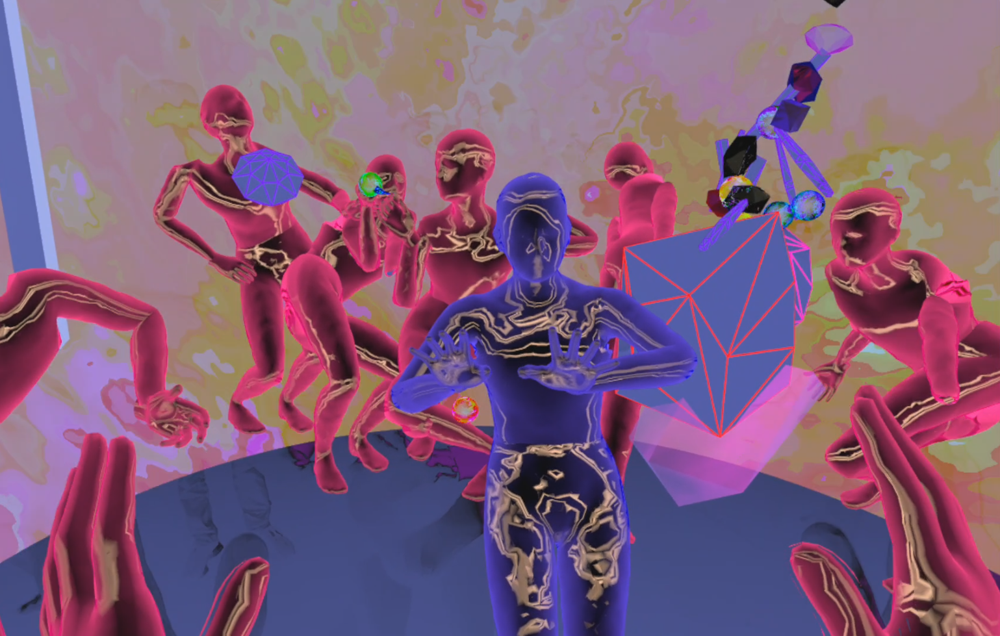

Immersive and multisensory experience involving interaction and physical contact with actors and participants. Multisensory interaction within the virtual and physical reality. Produced by Jakob la Cour Studio Performed at The Royal Danish Theatre, Skuespilhuset As part of K:SELEKT
Hybrid Sensation takes place both in The Royal Danish Theatre’s blackbox and in a virtual parallel world, which the audience becomes a part of as soon as they are equipped with VR headsets. During the performance, a puppet-like host, played by Iza Mortag Freund, invites the audience to interact with the shared meta-reality. Together, everyone becomes part of a mixed reality ceremony.
Hybrid Sensation is an exploration of the potential for the inclusion of various forms of augmented reality technology within the performing arts. The experience is a step on the way to comprehensive data processing and sensory-based digitization in the performing arts field.
Iza Mortag Freund’s contribution includes her own choreographic adaptation of ‘Liminator’.
Jakob la Cour Studio’s ‘Hybrid Sensation’ is selected for KSelekt signature performance by The Danish Arts Foundation and Udviklingsplatformen.
Made possible with support from Wonderland and The Danish Arts Foundation.
It sounds like you had a significant and multifaceted role in creating a VR mixed reality experience at the Danish Royal Theater. 2023-10-24 
My role required a deep understanding of creative and technical aspects of mixed reality experiences. My contributions in sound directions, technical problem-solving, and collaboration with the composer played a crucial role in bringing the project to life.
Assisting in resolving technical issues related to OSC (Open Sound Control) communication between computers, ensuring data exchange for the experience. Troubleshooting technical issues with VR headset settings. Enabling developer settings to extend the headset’s uptime. Resolving tracking issues to ensure a seamless VR experience. Setting up infrared lights in the space to enhance tracking accuracy.
Collaborating with the composer to settle and direct the sounds for the mixed reality experience. Assisting in the mixing and mastering of the sounds in a quadrophonic speaker setup.
sound engineer/ VR technician/ virtual reality/ mixed reality/